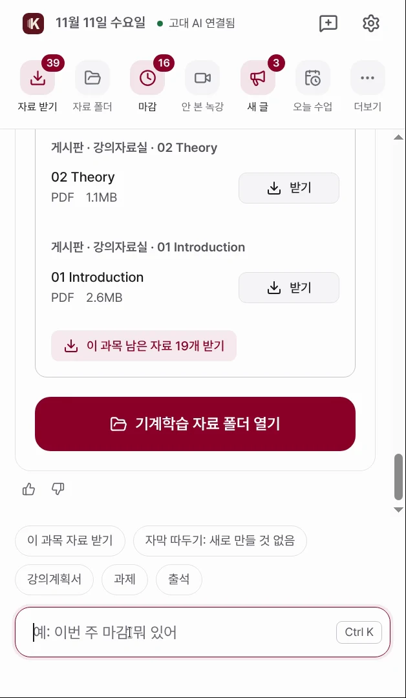
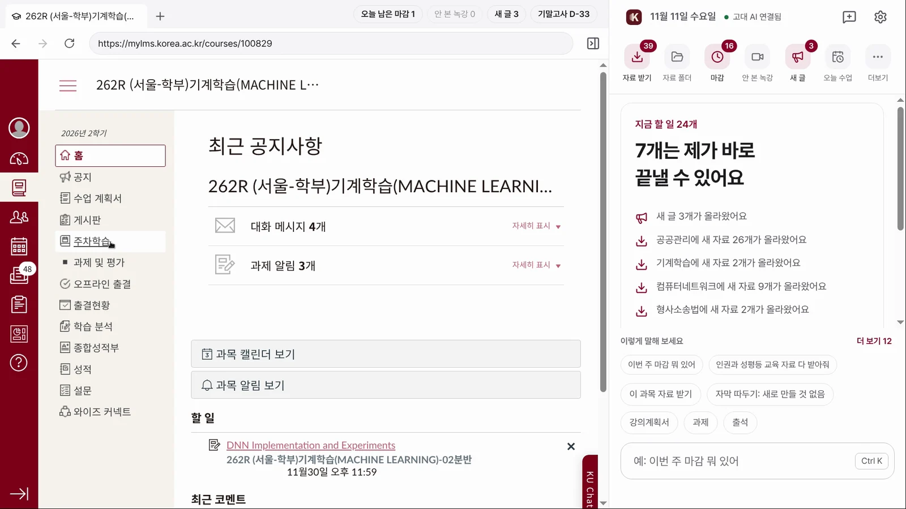
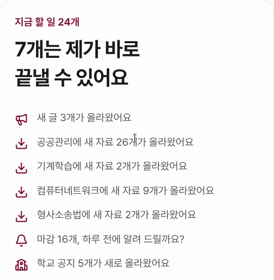
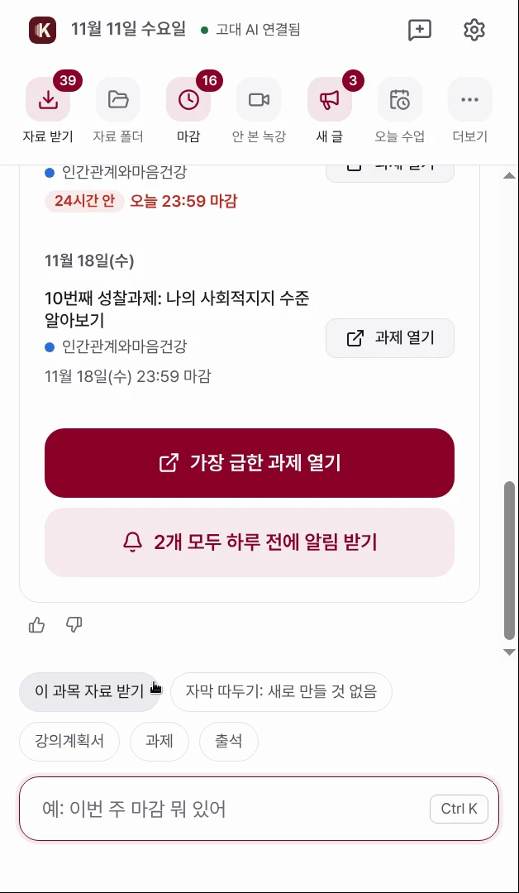
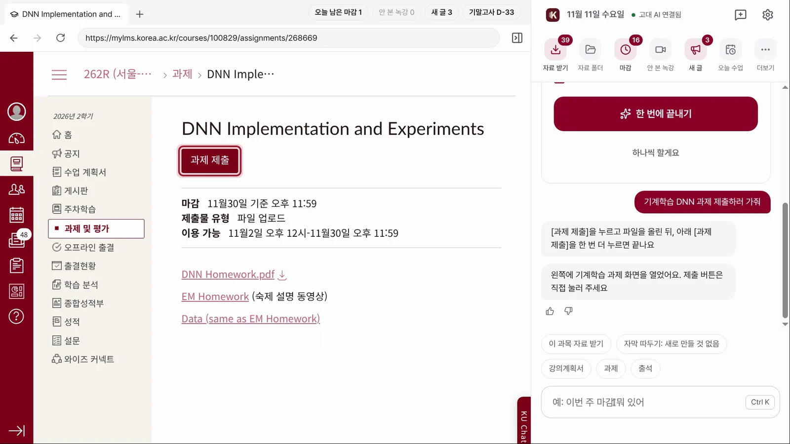
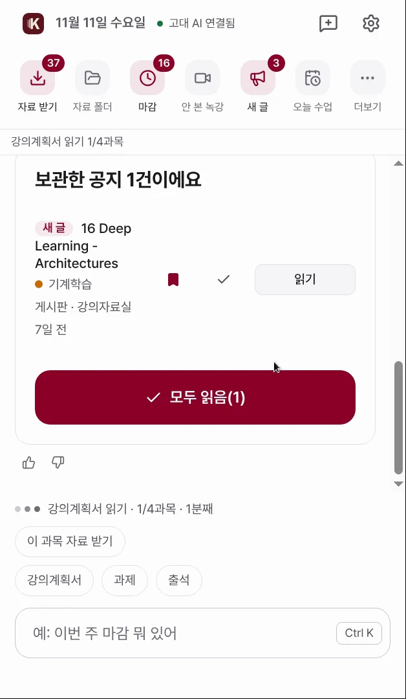

자료는 과목별 폴더로
새 자료를 다운로드 폴더의 KUrowser 아래 과목, 주차 폴더에 받아요. 이미 받은 파일은 다시 받지 않아요.

LMS 마감, 새 자료, 공지를 채팅 한 줄로 찾고 끝내는 고려대 학생용 데스크톱 앱이에요.
휴대폰에서는 설치할 수 없어요. 맥이나 윈도우 PC에서 받아 주세요.
마감 과제, 안 본 강의, 새 공지, 새 자료를 과목마다 들어가지 않고 한 화면에서 봐요. 앱이 대신 끝낼 수 있는 일은 「한 번에 끝내기」 한 번으로 처리해요.


마감, 공지, 자료, 강의계획서, 학사 일정, 도서관 열람실까지 물어보면 카드로 답해요. @과목으로 과목을 골라 물을 수도 있어요.

과제 제출, 퀴즈, 공지, 녹화강의 화면을 열면 메뉴를 숨기고 눌러야 할 버튼 하나에 표시를 붙여요. 제출과 시청은 학생이 직접 눌러요.

새 자료를 다운로드 폴더의 KUrowser 아래 과목, 주차 폴더에 받아요. 이미 받은 파일은 다시 받지 않아요.

새 공지를 읽음으로 넘기고, 다시 볼 공지는 보관함에 남겨요. 읽음 표시는 앱 안에만 남고 학교로 보내지 않아요.

학교 로그인 창에서 직접 로그인해요. 앱은 비밀번호를 받거나 저장하지 않고, 로그인 쿠키는 암호화한 저장소에 둬요.
제출, 업로드, 글쓰기, 출석이나 시청 기록 변경을 하지 않아요. 학교 화면의 버튼을 누르는 건 언제나 학생이에요.
고대 AI는 학생이 문장을 입력하거나 버튼을 누른 때만 불러요. 앱을 열거나 새로 고칠 때는 부르지 않아요.